An engagement is broken off as a temple decays: the tambourine that was the ring of the promise sounds through an empty church, a storm turns love into ruined goods, and two sets of footprints leave while the tambourine shatters.


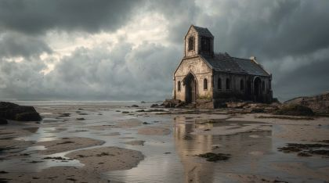
The poem
The poem is an inverted wedding liturgy. Each 'Ode' (read aloud as 'Old to', so the praise already sounds aged) is sung to a ceremony that never happened. The temple, choir stands, prayer lines and baptism pools are all empty. The pews are wrapped in cobwebs, the gift boxes are opened and left outside the side doors, the spirits have gone. The tambourine is the church's music and also a ring of jingles: the engagement itself, still whole as it flies through the empty space.
The turn is 'Old to the storm ending, what was once love now goods,'. After it the poem stops mourning a place and counts what is left of two lives, as a ledger: goods sealed apart by lightning, daily bread rotted by rain, blankets soiled by 'venomous puppeteers', a nod to the hands that worked the couple, and to our own rods and strings. It ends small and exact: two sets of button-printed footsteps, out of step, and the tambourine shattered into pieces.
Look
Begin warm and gilded (amber glass, dust in shafts), then drain to cold grey through the time-lapse, with lightning as hard white single frames cut into the corrugation. The cardboard should age on camera: pew and choir cards get progressively scuffed kraft edges, cobwebs drawn in white pencil on tracing paper laid over them, and the gift boxes and bread as clean gouache cards that are swapped for water-stained, buckled versions (really wet the card and let it cockle). Rain is scratched into black acetate, kept above the cards, and the mud shore is a sheet of brown kraft dragged with grey wash.
Our best elements
The strongest things we already have for this poem: generated footage, Atlantis views, found film and painted kit sheets.
03.2a/03.2c: the whole tambourine suspended in the nave, with stained-glass lancets behind it
Figure-free, warm, and the vertical lancet panes make the best archive surfaces of the poem. Caveat: the drum has tension lugs; repaint the hero card with jingles.
03.1a: the tumble through the black void
Isolated on pure black, so it keys cleanly as the bridge from 02's window and doubles as the hero prop reference.
03.3c: outside the side doors where the gift boxes are left
Exactly the 'side doors': a tall carved wooden door panel, ivy and raking light. The door leaf is a vertical surface for an archive insert.
03.4a: 'It thunders, then it rains'
A night chapel facade under real lightning and driving rain, with no figure in it. It sets the storm palette in one frame.
03.5a remnants shore / passage plate; crop to the wet sand and the arched door
The only plate that already joins chapel, shore and standing water. The flat wet sand takes footprints and an open-palm POET.
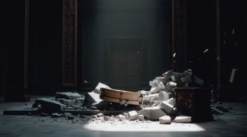
03.6b: the tambourine lands and breaks
A broken rim in stone rubble, a door at the back and a hard pool of light on the floor. It is the shatter beat already lit.
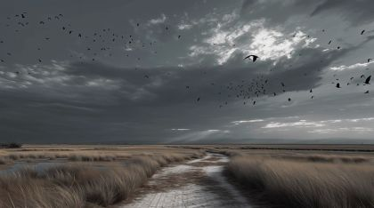
03.5c: the two walk away up the trail; bridge into 04
Figure-free, with a path leading into depth and a storm lifting. Two small back-view cards can walk it without a fight.
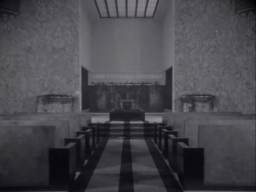
03.1b: the empty temple, empty prayer lines
Rows of empty seats running in one-point perspective to a bright rear wall, a ceremony hall with nobody in it. It reads as 'empty temple' with no explanation.
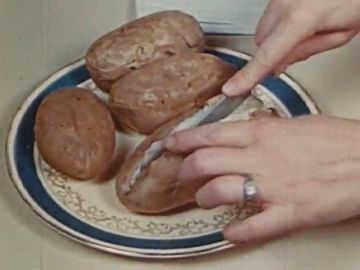
03.4c: 'daily breads'; insert in a pane during the bread line
A woman's ringed hand slices loaves on a plate: engagement ring and daily bread in one archive frame.
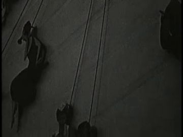
03.4d: 'venomous puppeteers'
Puppet shadows hanging on strings, so the archive names the puppeteers outright and rhymes with our own cut-out craft.
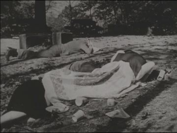
03.4d: 'blankets soiled'
Bodies lying under blankets on bare ground, a domestic cover turned into a ruin image. High contrast, so it reads inside a pane.
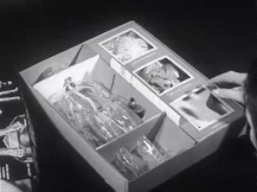
03.3c: the opened gift boxes
A white compartment box open with its lid off, bright and frontal. It works as the inside of the gift box itself.
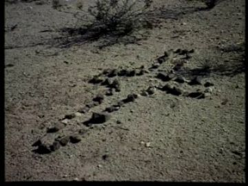
03.5b: two sets of footsteps
A line of prints pressed into pale ground, close to the 'button-printed footsteps' insert as found.
03.4b: 'sealed apart by lightning', flash plates
A dark treeline under storm sky. Its flashes can be cut frame-for-frame into the gift-box split.
What we need
- A figure-free chapel interior with choir stands, kneelers and a dry baptism pool: G0 is all window, so the nave itself is missing.
- The shore after the storm with the chapel actually in ruins (pew ends, lead tracery, a cross half-sunk): gen_e315da34f9 still shows the chapel standing.
- A hero tambourine card with jingles: every generated version is a lugged frame drum. It needs whole, cracked and shattered states that carry into 04.
- Painted poet back-walk and EX back-walk cards: the black_tshirt and ex_jacket packs are blank layouts.
- The opened white gift box glowing on the stone step: no generated or archive frame shows it on a doorstep.
- The 'button-printed footsteps': nothing shows prints made of buttons, so it needs a stamped-card insert.
- Archive rain and flooding on a church or house interior; current rain is all sky or glass.
- A clear time-lapse of cobweb or dust accumulation: Spider Engineers is close-up web only.
Characters
POET kit →
The one breaking off the engagement. He appears only at the end, walking away on his own trail, and in the passage, standing in the wreck with an open hand.
Costume. black_tshirt: plain black crew-neck t-shirt, dark trousers and plain dark sneakers, no glasses. Paint the shirt with a dull mud-grey splash at the hem and sneaker toes after the storm, and leave a dark wet patch across the shoulders.
Expressions. sad (eyes lowered, mouth closed), head down (replacement), profile looking back at the pool
Hands. relaxed (at sides, walking), open, palm up at waist (holds nothing)
Cards to paint. body.back walk set (4 leg positions); body.threequarter stand; head: sad threequarter, down, profile-back-glance; hand.R open·palm; hand.L/R relaxed·back; mud-splashed sneaker feet
poet.03.action has only an empty 'stand · front' cell and no hands or props listed. It needs walk·back for 03.5c and threequarter stand with open palm for the passage. Its WHO photos show the track-jacket outfit with red piping (the 04 costume), while the black_tshirt pack text says plain black t-shirt. Fix it so the painter doesn't put the jacket on him here.
Its action sheet for this poem is on Character Kits v2.
open the action sheet →| action | beats | how the card does it |
|---|---|---|
| walk away (back) | weight shifts → four-frame walk cycle up the trail → slows → stops one step behind EX's line | body.back torso, thigh/shin cards cycling on hip and knee brads; head back card stays fixed; arms swing ±8° on shoulder brads |
| open the hand | hand hangs relaxed → forearm rises to waist → hand card swaps relaxed→open palm-up → holds open through line and archive answer → no release (cut) | rotate farm.R about the elbow brad 70°; swap hand.R relaxed·back for open·palm; then swap the head to the 'down' replacement on the archive line |
EX kit →
The man being left, or leaving: the second set of footprints. Seen only from behind, a step ahead on the other trail.
Costume. ex_jacket: dark olive bomber jacket with ribbed hem, dark jeans and white low sneakers, muddied to grey at the toe. No vape pen here; both hands empty.
Expressions. unseen: back of head only (short dark hair, nape, one ear at most)
Hands. relaxed (at sides)
Cards to paint. body.back walk set (4 leg positions); head back + threequarter_back; hands relaxed back L/R; white sneakers with mud
ex.03.action labels its only cell 'stand · front', which contradicts the never-seen-face rule. Relabel it walk · back and threequarter_back. The WHO back-of-head card is right; the body cells are blank.
Its action sheet for this poem is on Character Kits v2.
open the action sheet →| action | beats | how the card does it |
|---|---|---|
| walk away (back), out of step | starts a half-cycle before POET → walks → never turns → shrinks into the far trail | body.back cards on the same cycle as POET, offset two frames so the prints land out of step; a three-quarter-back head card for one beat as he angles right |
Props
Sorted by priority. Each has its design, how to build it, the references found in the archive and our footage, and a prompt for its card sheet.
a salvaged arched chapel door frame stood upright in the mud (archive surface)
180 cm tall pointed-arch frame of charred oak, empty inside. States: upright, leaning
Generation prompt
Prop card sheet: a pointed-arch chapel door frame of charred oak with no door in it, as flat corrugated-cardboard cards, gouache with confident ink line, raw kraft cut edge, flat-on even light, plain background. Separate cards: 1) upright, empty opening; 2) leaning at 10 degrees; 3) its wet reflection card.
two trails of 'button-printed' footprints, out of step
28 cm sole prints; one trail stamped as clusters of four-hole buttons pressed in mud, the other plain sneaker tread. States: fresh, filling with rainwater
References found
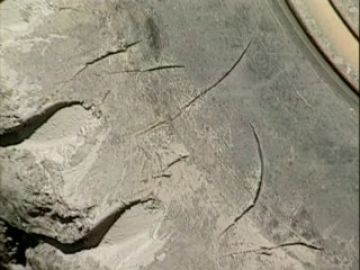
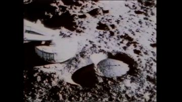

Generation prompt
Prop card sheet: footprints in mud as flat corrugated-cardboard cards, gouache with confident ink line, raw kraft cut edge, flat-on even light, plain background. Separate cards: 1) a left and right footprint made of pressed four-hole buttons; 2) a left and right sneaker-tread print; 3) each print filling with a thin skin of rainwater.
white wedding gift boxes with ribbon, lids off
35 cm cubes, white card with satin ribbon drawn in silver ink. States: closed with bow, opened lid-off with faint glow inside, split in two by lightning with scorched edges
References found
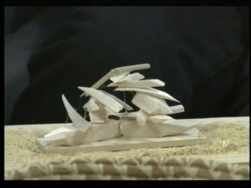
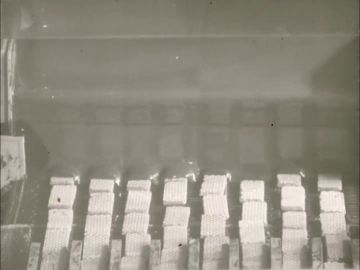

Generation prompt
Prop card sheet: white wedding gift boxes with satin ribbon as flat corrugated-cardboard cards, gouache with confident ink line, raw kraft cut edge, brass brads at the lid hinge, flat-on even light, plain background. Separate cards: 1) closed with bow; 2) open, lid off and leaning, pale glow inside; 3) empty interior; 4) split in two halves with scorched black edges.
black marionette strings and a cross-bar control (the venomous puppeteers)
60 cm wooden cross-bar control, black thread strings. States: taut, cut and slack, tangled in blanket
References found
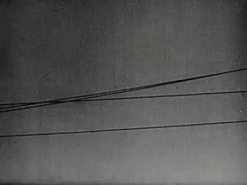
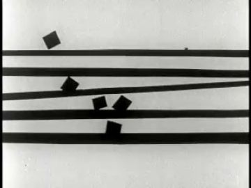
Generation prompt
Prop card sheet: a marionette cross-bar control with black strings as flat corrugated-cardboard cards, gouache with confident ink line, raw kraft cut edge, brass brads at the cross-bar joint, flat-on even light, plain background. Separate cards: 1) control with strings taut; 2) strings cut, ends curling; 3) strings tangled through a muddied wool blanket.
the wooden-rimmed tambourine from 02 (the engagement as a ring)
25 cm round; pale vellum skin, honey-wood rim, five pairs of brass jingles in slots. States: whole/still, whole/tumbling (motion-smear card), hairline crack
References found
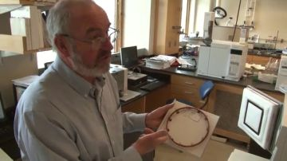
Generation prompt
Prop card sheet: a wooden-rimmed tambourine with five pairs of brass jingles in slots and a pale vellum skin, painted as flat corrugated-cardboard cards in gouache with confident ink line, raw kraft cut edge, brass brads where jingles hinge; flat-on even light, plain off-white background. Separate cards: 1) whole, face-on; 2) whole, three-quarter tilt; 3) whole with motion-smear streak card; 4) whole with a hairline crack across the skin.
the shattered tambourine: rim arcs, torn skin, loose jingles
rim arcs 8-14 cm, skin shards 5-10 cm, jingles 2.5 cm discs; each a separate card so they can scatter and travel into 04
References found

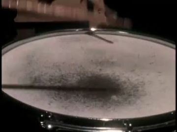
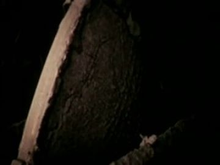
Generation prompt
Prop card sheet: pieces of a shattered wooden tambourine as flat corrugated-cardboard cards, gouache with confident ink line, raw kraft cut edges, flat-on even light, plain background. Separate cards: 1) three split rim arcs of honey wood; 2) four torn vellum skin shards with ragged edges; 3) eight loose brass jingle discs, some bent; 4) the same pieces muddied and wet-darkened.
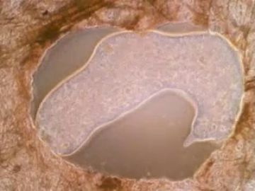
sunken tiled baptism pool, dry and cracked
250 cm, white and blue tile, leaves in the drain. States: dry cracked, filling with storm water
References found
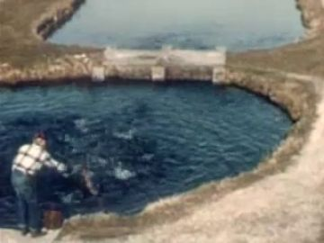
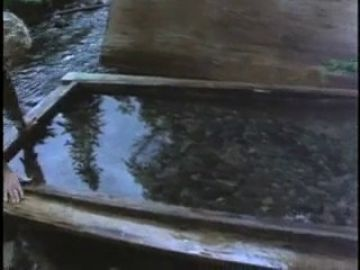
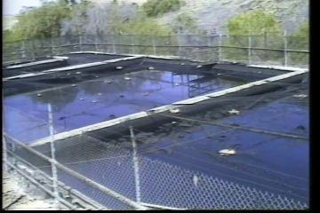
Generation prompt
Prop card sheet: a sunken tiled baptism pool seen from slightly above, as flat corrugated-cardboard cards, gouache with confident ink line, raw kraft cut edge, flat-on even light, plain background. Separate cards: 1) dry, cracked tile, dead leaves in the drain; 2) half-full of brown rainwater.
wool blankets, mud-soiled
180 cm folded or draped, cream wool with a red stripe. States: folded clean, trampled with mud, tangled in cut strings
References found
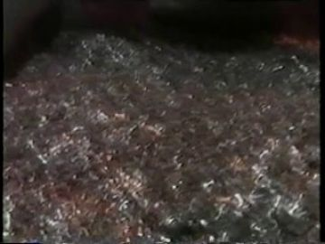
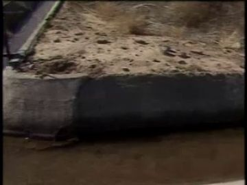
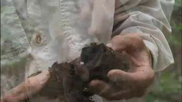

Generation prompt
Prop card sheet: a cream wool blanket with a single red stripe as flat corrugated-cardboard cards, gouache with confident ink line, raw kraft cut edge, flat-on even light, plain background. Separate cards: 1) folded clean; 2) draped and mud-soiled; 3) trampled flat with black strings tangled through it.
round daily-bread loaves
25 cm round loaves. States: fresh crust, soaked and swelling, rotted grey-green and collapsing
References found
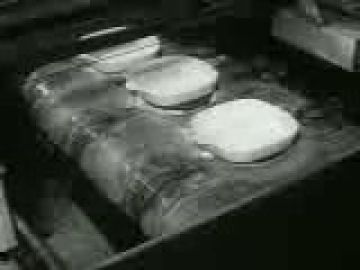
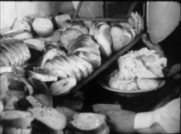
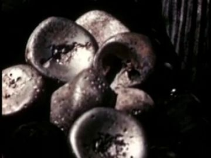

Generation prompt
Prop card sheet: round loaves of daily bread as flat corrugated-cardboard cards, gouache with confident ink line, raw kraft cut edge, flat-on even light, plain background. Separate cards: 1) fresh golden crust; 2) rain-soaked and swollen; 3) rotted, grey-green mould, collapsing.
pew ends, rose-window lead tracery, stones, a cross
pieces 40-200 cm, ash-grey and wet. States: on the shore, half-sunk in mud (carry to 04 ashed over)
References found
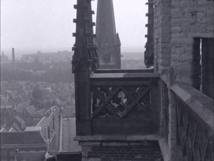
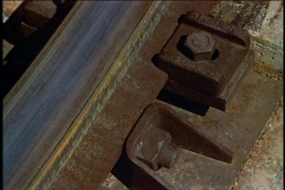
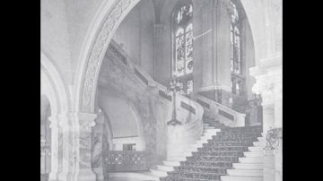
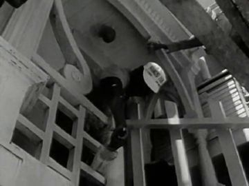
Generation prompt
Prop card sheet: chapel wreckage as flat corrugated-cardboard cards, gouache with confident ink line, raw kraft cut edge, flat-on even light, plain background. Separate cards: 1) a broken pew end; 2) a fragment of rose-window lead tracery with a few coloured shards; 3) three dressed stones; 4) a small wooden cross tilted; 5) each half-sunk in mud.
oak chapel pews in three decay states
300 cm pew ends with a carved cross. States: varnished, cobwebbed (tracing-paper overlay), split and waterlogged
References found
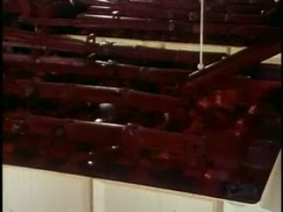
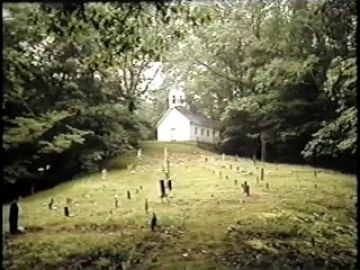
Generation prompt
Prop card sheet: an oak chapel pew end with a carved cross as flat corrugated-cardboard cards, gouache with confident ink line, raw kraft cut edge, flat-on even light, plain background. Separate cards: 1) varnished whole; 2) dull and cobwebbed; 3) split, waterlogged, black at the foot.
tiered wooden choir stands with one music stand upright
300 cm three-tier risers, a single black music stand. States: empty, cobwebbed
References found
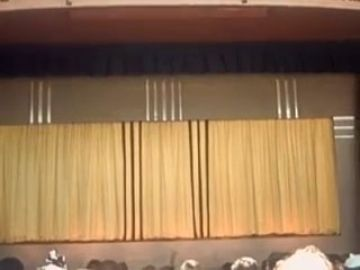

Generation prompt
Prop card sheet: empty three-tier wooden choir risers and one black music stand as flat corrugated-cardboard cards, gouache with confident ink line, raw kraft cut edge, flat-on even light, plain background. Separate cards: 1) risers empty; 2) risers cobwebbed; 3) music stand upright; 4) music stand fallen.
cloth hymnal crumbling to dust
22 cm, faded red cloth. States: whole, pages flaking, dust heap
References found
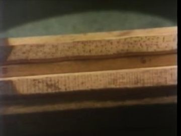
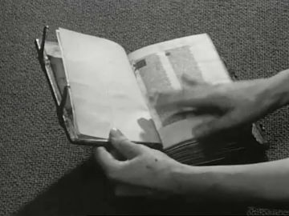
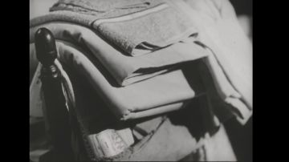
Generation prompt
Prop card sheet: a faded red cloth hymnal as flat corrugated-cardboard cards, gouache with confident ink line, raw kraft cut edge, flat-on even light, plain background. Separate cards: 1) whole, closed; 2) open with pages flaking; 3) a small heap of paper dust.
Places
black_void
Pure black space the tambourine tumbles through after leaving 02's window. It should feel like falling sound.
Where the archive opens: none: keep it empty
References: our footage, Atlantis views, found film


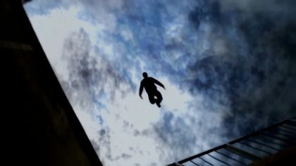
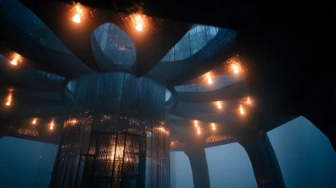
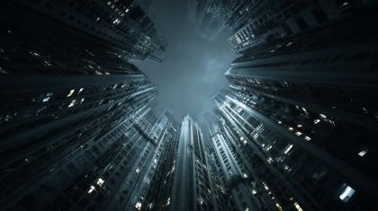
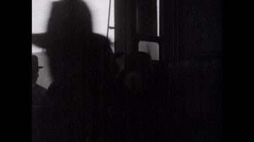
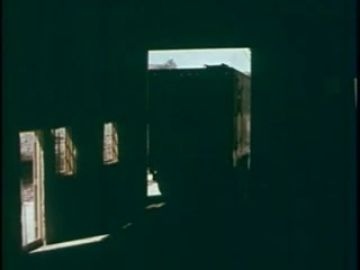
chapel_interior
An empty stone chapel lit through a rose window, warm at first and then draining through time-lapse to grey; no one in it.
Where the archive opens: stained-glass lancet panes (vertical); bright rear wall of the hall (Westerveld); dry baptism pool floor (weak unless bright)
References: our footage, Atlantis views, found film
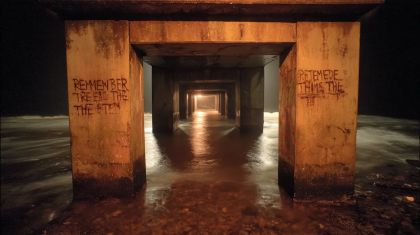

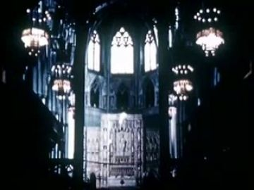
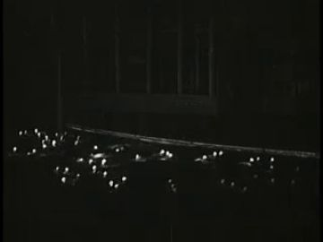
Generation prompt
Wide interior of an empty small stone chapel, no people, rose window high on the far wall, tiered wooden choir stands left, rows of empty pews and kneelers, a sunken dry tiled baptism pool in the foreground, dust in amber window light, photoreal, locked-off camera for time-lapse.
chapel_side_doors
Outside the side doors: carved oak leaf, ivy, a stone step where the opened gifts sit.
Where the archive opens: the carved door panel (vertical); inside an opened gift box (small, bright)
References: our footage, Atlantis views, found film


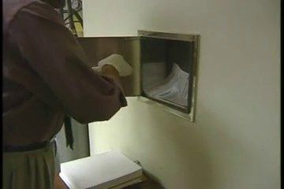
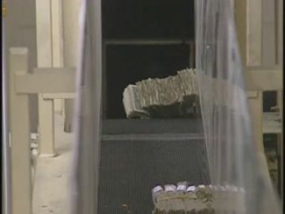
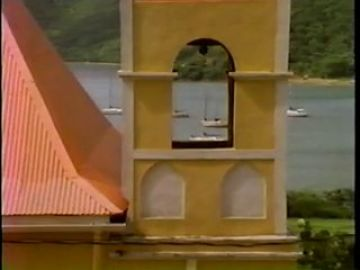
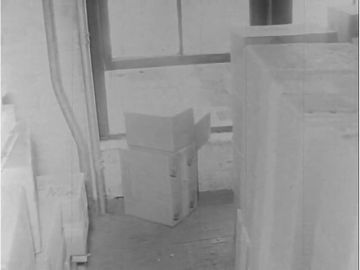
chapel_storm
The chapel from outside in a night storm, lightning splitting the gable, rain driven sideways.
Where the archive opens: the chapel door arch; rain-streaked pane (gen_dd0782d25a) as a cutaway
References: our footage, Atlantis views, found film


remnants_shore
Grey mud shore after the storm: chapel wreckage, a pool that did not drain, two trails leading away; quiet and flat.
Where the archive opens: upright salvaged door_frame card (vertical, best); the chapel's arched doorway in gen_e315da34f9 (crop large); rain pool at his feet (faint; only with a bright film)
References: our footage, Atlantis views, found film
Generation prompt
Low wide shot of a flat grey mud shore after a storm, no people, the ruins of a small stone chapel strewn across it: broken pew ends, lead window tracery, stones, a tilted wooden cross; a still rainwater pool in the foreground; storm clouds lifting to the north-east, pale light, photoreal.
Effects
| effect | how, in this cut-out world |
|---|---|
| tumble_motion_blur | Rotate the tambourine card on a single centre brad and swap in a smear card on every third frame; jingle glints on a separate acetate layer. |
| time_lapse | Lock the plate and dissolve through three painted decay states of each card (clean, cobwebbed, rotted) while code races a light gradient across the floor. |
| cobweb_growth | White-pencil webs on tracing paper revealed row by row with a code wipe mask. |
| dust_motes | Code-drawn particles in the window shafts, with a warm tint before the storm and grey after. |
| lightning | Two or three single-frame cuts to a violet-white flash with a black silhouette card of the chapel; borrow the timing from Lightning 3 (2007). |
| heavy_rain | Scratched black acetate scrolled diagonally over everything, plus real rain-on-glass (gen_dd0782d25a) as a cutaway. |
| shatter_burst | Swap the whole tambourine for its pieces in one frame, then throw each piece card on a short code-driven arc; jingles bounce twice. |
| soft_glow | A radial gradient behind each opened gift box card that fades out over the time-lapse: the salvations leaving. |
| storm_clearing | Slide the plate's sky up and dissolve to gen_bb8e6e2acf / the clearing marsh light; a last-rain acetate thins out. |
The puppet passage
his line · 03_L07
“daily breads soaked and delivered rotted by rain,”
the archive answers · Gardening (1940)
“Rain, rain, it's soaked into the water.”
a hand that opens and stays open · water: a rainwater pool in the mud of the shore among the chapel wreckage, beside the footprints
Keep. The hand that opens and stays open is the right gesture for 'daily breads soaked and delivered rotted': he shows what is left, which is nothing. The Gardening (1940) answer 'Rain, rain, it's soaked into the water' gives the same rain as both ruin and nourishment.
Better. Move the surface from the rain pool (water reads faint) to an upright salvaged door_frame card standing in the mud beside the pool, so the film opens in a vertical pane and reflects down into the water. Crop gen_e315da34f9 so the chapel's own arched doorway is large if no card is built. Put a soaked loaf card on the ground under his open palm, and swap his head to 'down' on the archive line.
Other lines that could carry one:
- 03_L01 'a tambourine sounds off an empty temple': hand stops short of the suspended tambourine; Westerveld (1925) empty hall opens in a lancet pane of gen_872d16167d.
- 03_L03 'opened gift boxes placed outside the side doors': object held out, an opened white box offered lid-off; Consumers Want to Know (1960) opens in the carved door leaf of gen_09d9df4ac6.
- 03_L06 'broken and sealed apart by lightning': palm on glass against a rain-streaked pane (gen_dd0782d25a); Lightning 3 (2007) flashes inside it.
- 03_L08 'blankets soiled by venomous puppeteers': a grip on cut marionette strings; World of Tomorrow (Part II) marionette shadows open in the chapel door arch of gen_933cc247ea.
- 03_L09 'two sets of button-printed footsteps': head lowers to the prints; Cabeza Prieta (2006) footprints open in the door_frame card on the shore.
Scene ideas
- Ring rhyme: For Health and Happiness (1941), the ringed hand slicing loaves, plays in a pane while the bread card on the altar step swells and rots in time-lapse. The engagement ring is in the archive and its ruin is in paper.
- The empty hall: Het crematorium Westerveld (1925) is cut in as a straight archive shot between gen_872d16167d and the choir-stand card. Its rows of empty seats are the 'empty prayer lines', with no puppet in the shot.
- Puppeteers revealed: in 03.4d a cut-out cross-bar control descends into frame on real black thread over the blanket card, while World of Tomorrow (Part II) marionette shadows play on the chapel wall. The poem's 'venomous puppeteers' are our own rig.
- Lightning cut: the gift box card splits in two on a single flash frame lifted from Lightning 3 (2007), and the halves stay apart for the rest of the scene.
- Gifts at the door: gen_09d9df4ac6 as plate, three opened gift box cards on the step with a fading glow, and Consumers Want to Know (1960) visible inside the nearest box like a diorama.
- Button-printed footsteps: two sneaker cards press prints one at a time into kraft mud, one trail stamped with buttons; then wide on gen_e948110f1d as the two back-view figures walk out of step.
- Shatter bridge to 04: the tambourine lands in gen_2bd9f63a13's light pool and bursts. The pieces' arc carries to the waterline, where 04 opens on the same pieces.
- Blankets: Duck and Cover (1951), figures under blankets on bare ground, plays inside the door_frame card while the muddy blanket card lies at its foot.
References to look for
| what | where to look |
|---|---|
| Empty sanctuary and ceremony halls | archive: 'church interior empty', 'chapel', 'crematorium', 'pews', 'baptistry'; Dutch Polygoon newsreels; Prelinger church-building films |
| Wedding gifts, engagement rings, bridal showers | archive: 'bridal shower', 'wedding gifts', 'engagement ring', 1950s home movies and consumer films (Consumers Want to Know) |
| Rain and flood inside buildings | archive: 'flood damage', 'storm damage church', 'roof leak', Civil Defense and Red Cross disaster films |
| Marionettes and puppeteers | archive: 'marionette', 'puppet show', World's Fair puppet theatres; Lotte Reiniger silhouettes; Jan Švankmajer's decaying objects |
| Time-lapse decay of objects | archive: 'time lapse mould', 'bread mould', 'decomposition'; Sam Taylor-Johnson 'Still Life'; Bill Morrison 'Decasia' for nitrate decay texture |
| Painted ruin and abandoned churches | painters: Caspar David Friedrich 'Abbey in the Oakwood', John Piper bombed churches; photographers: Matt Lambros, Andrew Moore 'Detroit Disassembled' |
Our footage for this poem
The 20 generated clips and 8 Atlantis views closest to the poem (CLIP, image against its treatment and lines).


The kit
| status | kind | item | source |
|---|---|---|---|
| need | fx | scratched rain acetate | to make by hand / code |
| need | fx | cobweb tracing overlays | to draw |
| need | prop | tambourine pieces | to generate; shared with 04 |
| need | prop | gift boxes: closed/open-glow/split | to generate |
| need | prop | marionette control + strings | to generate; plus real black thread |
| need | prop | button-printed + tread footprints | to generate |
| need | prop | door_frame archive surface | to generate |
| need | prop | bread, blankets, pews, pool, remnants, choir stands, hymnal | to generate |
| need | set | empty nave with choir stands and pool | to generate |
| need | sound | tambourine jingle, thunder, rain on stone | to find / record; jingle must decay into the shatter |
| partial | body | POET black_tshirt body.back walk cycle | existing pack poet.black_tshirt.body.back (layout only), to paint |
| partial | body | POET black_tshirt threequarter stand | poet.black_tshirt.body.threequarter layout, to paint |
| partial | body | EX ex_jacket body.back walk cycle + back head | ex.ex_jacket.body.back / heads, to paint |
| partial | hand | POET hand.R open·palm, relaxed·back L/R | poet.black_tshirt.hands layout, to paint |
| partial | head | POET heads: sad threequarter, down, back | poet.black_tshirt.heads layout; style refs exist |
| partial | prop | tambourine hero (jingles) whole/cracked | ref gen_a0ef973cb6, to generate card sheet |
| partial | set | ruined remnants shore | gen_e315da34f9 + remnant cards; or generate ruined version |
| have | fx | lightning flash frames | Lightning 3 (2007) arch_82c4a711-2056 |
| have | set | chapel rose window plate | gen_872d16167d |
| have | set | side doors plate | gen_09d9df4ac6 |
| have | set | storm plate | gen_933cc247ea |